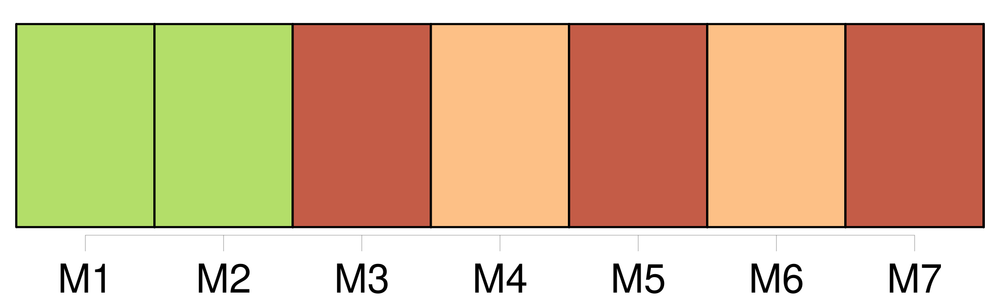

Longueur nb maillons : 666 mentions |
  |
Audoux - [Douce Lumiere] Audoux - [Douce Lumiere] 1 7-31
[Elle] joue à courir dans le verger qui entoure la très vieille maison où, par un clair matin de mai, [sa] venue au monde apporta aux siens l'angoisse, le deuil et un désespoir sans limite. Aujourd'hui, [elle] a sept ans et c'est encore un clair matin de mai. [1 phrases] [La fillette] court pieds nus, tête nue, bras nus, n'ayant pour tout vêtement qu'une souquenille de grosse toile toute rongée par le bas, et dont les accrocs mal recousus menacent de s'ouvrir, au moindre effort. [Elle] court le long de la haie d'aubépine taillée à hauteur d'homme et aussi impénétrable qu'un gros mur. [Elle] court sous les arbres, les contournant l'un après l'autre et parfois, grimpant sur l'une des grosses branches, [elle] reste là, perchée, à rire au nez du chien qui s'essouffle en des bonds énormes et pleure de ne pouvoir [la] rejoindre. Parfois aussi tout en courant [elle] se baisse pour ramasser une poignée de fleurettes qu' [elle] lance adroitement dans la gueule de [son] compagnon, rien que pour le voir éternuer, souffler, et rejeter les fleurettes, puis bondir sur [elle] , [la] renverser et [la] pousser du museau jusqu'à ce qu' [elle] soit debout pour repartir. [Elle] joue sans bruit, la bouche seulement ouverte pour des rires muets ; car si [elle] ignore la peur de rester seule dans [sa] maison isolée, [elle] craint les gamins qui rôdent dans les champs d'alentour et viennent [lui] jeter des pierres comme à un vilain animal. À cause d'eux, depuis longtemps déjà [elle] a pris l'habitude du silence. Il y a encore, derrière la maison, l'entrée du potager qui [lui] donne des soucis, malgré sa large et forte grille dont les barreaux se terminent en lances pointues comme des fuseaux. [1 phrases] Cette grille, [elle] ne l'a jamais vue ouverte. Cependant [elle] a dû s'ouvrir autrefois pour laisser entrer et sortir des charrettes dont on voit encore la trace à deux ornières qui se perdent au loin, entre les sapins. [Elle] ne joue plus de ce côté depuis qu' [elle] a vu un homme à besace s'acharner contre la serrure massive et rouillée, et cela sans s'inquiéter des aboiements furieux du chien qui disaient clairement que personne n'avait le droit d'entrer par là. La serrure avait résisté, mais l'homme était parti avec des jurons et des menaces qui avaient épouvanté [l'enfant] et [la] [laissaient] sous la crainte constante d' [elle] ne savait quel danger. Et voici qu'à l'instant même où [elle] y pensait, et sans qu'aucun bruit de la grille ne [l'] eut avertie, [elle] apercevait tout à coup, venant du potager, un jeune garçon qui s'avançait en [lui] souriant comme à une amie de toujours.
Le chien, lancé pour une nouvelle course, s'arrêta net et gronda ; mais il s'apaisa vite ; [sa petite maîtresse] , comme attirée par le sourire joyeux de l'arrivant, marchait lentement à sa rencontre. — [Tu] es donc toute seule avec lui?? [1 phrases]
— Oui, dit [la petite] , il joue avec [moi] et il n'est pas méchant. [5 phrases] « Pourquoi était [-elle] seule à la maison?? Comment s'appelait [-elle] ?? [1 phrases] Et [ses] parents, où étaient -ils??
» [Elle] était seule parce que [son] grand-père travaillait loin du verger. [Elle] s'appelait [Douce] et [son] chien s'appelait Tou.
[Elle] n'avait pas de parents parce qu' [elle] était née sans père ni mère.
Et pour s'excuser de n'être pas semblable aux autres enfants, [elle] ajouta très vite : [Je] l'ai trouvé dans le bois, sur la mousse. [6 phrases]
Et depuis que Luc, son grand frère, était parti pour le régiment, il s'ennuyait à la maison où ne venaient pas de petits camarades ; mais maintenant qu'il connaissait [Douce] et son chien, il viendrait chaque jeudi jouer avec eux. [3 phrases] Après son départ [Douce] resta longtemps à regarder le sous-bois.
Quelque chose, venant du plus profond d' [elle -même] , [la] ravissait et [la] peinait tout à la fois. [Elle] souriait à ce sous-bois, [elle] souriait aux flèches d'or que le soleil lançait à travers les branches, [elle] souriait au ciel bleu, à la clarté vive et au vent frais.
Mais soudain [son] petit visage se crispa et [elle] se mit à pleurer bruyamment. [2 phrases] Noël et Tou menaient au contraire un vrai tapage, et le rire éclatant de [Douce] ne s'arrêtait guère. Toute crainte s'était éloignée d' [elle] Qui donc pourrait [lui] faire du mal aux côtés du garçon et du chien?? [2 phrases] [Douce] , légère et souple, suivait avec intérêt tous les mouvements de son camarade. Et derrière lui, [elle] faisait des culbutes savantes, [franchissait] des obstacles, [grimpait] jusqu'au faîte des arbres pour se nicher entre les feuilles ou se balancer entre les branches. [2 phrases] [Douce] ne demandait pas mieux que de se baigner dans le ruisseau et que pêcher dans l'étang, mais pour cela il fallait sortir du verger, et son grand-père le [lui] défendait sévèrement, quoique la barrière fût fermée d'un solide cadenas dont il gardait la clé. Noël, que rien n'embarrassait, trouvait tout simple de faire franchir cette barrière à [la fillette] , mais [elle] refusait. [Elle] pouvait être vue de la route et dénoncée, disait [-elle] [Elle] craignait fort ce grand-père taciturne qui ne [lui] adressait la parole que pour [lui] défendre une chose ou une autre. [2 phrases] Mais, puisque [Douce] avait si peur d'être vue, il n'y avait qu'à sortir comme lui, par la grille du potager. Et tout de suite il entraîna [la petite fille] pour l'escalade. Il fallut y renoncer pour ce jour -là, [Douce] , n'ayant réussi qu'à élargir les accrocs de [sa] souquenille et augmenter les éraflures de [ses] jambes et de [ses] bras. Noël, dépité, ne cessait de dire : « Il [te] faudrait une culotte. Je [t'] apporterai une culotte.
» La difficulté pour [elle] était grande cependant. Lorsque Noël apporta la culotte, [elle] la mit rapidement, [rentra] [sa] souquenille dans la ceinture qu' [elle] serra fortement avec une ficelle. Puis, échappant à Noël qui voulait [la] soulever de terre, [elle] prit, ainsi que lui, les barreaux à pleines mains, se hissa jusqu'aux lances qu' [elle] évita de justesse et [se laissa glisser] de l'autre côté, un peu étourdie, un peu tremblante aussi de l'effort. [2 phrases]
Noël tirait [Douce] par la main : [11 phrases] À vivre des journées entières auprès de [sa petite fille] , le grand-père silencieux s'aperçut vite du changement qui s'était fait en [elle] pendant ce dernier été. [Elle] parlait peu, habituée à ne jamais recevoir de réponses à [ses] questions, mais le regard qu' [elle] posait sur lui à certains moments montrait une intelligence qui l'étonnait comme une chose tout à fait inattendue. Le nouveau visage de [l'enfant] ne l'étonnait pas moins. [3 phrases] Ce n'était que des bribes de cantiques entendus à l'église qu' [elle] chantait, mais d'une voix étendue et si pure qu' [elle] semblait l'avoir empruntée aux anges du paradis, ainsi que le disait mère Clarisse, la nourrice qui [l'] avait élevée jusqu'à l'âge de cinq ans. Et surtout, du matin au soir, [elle] sifflait comme un garçon. [Son] corps avait changé. [Elle] n'avait plus [ses] membres ronds de toute petite, ni cette façon de marcher en sautillant qui [lui] laissait toujours un pied en l'air. Menue et droite, [elle] avançait d'une allure ferme, et [ses] moindres gestes étaient sûrs et bien posés. Il y avait encore cette audace qui [lui] était venue de demander à tout propos, quoique ne recevant pas de réponses : « Grand-père, est -ce que [j'] irai bientôt à l'école?? » Avec cela [elle] devenait une vraie petite ménagère, nettoyant la maison, préparant les repas, et toujours prête à aider le vieillard dans ses travaux du dehors. Au verger, tandis qu'il cherchait la meilleure place pour son échelle, [elle] étreignait l'arbre et se trouvait tout de suite dans les plus hautes branches, réclamant un panier qu' [elle] accrochait à [sa] portée et qu' [elle] emplissait rapidement. La cueillette finie, [elle] redescendait avec une légèreté d'oiseau.
La dernière branche atteinte, [elle] la suivait, la [courbait] et [se laissait] glisser à terre avec une telle souplesse que le père Lumière ne pouvait s'empêcher de [l'] admirer. Cependant cette adresse de [l'enfant] , tout autant que [sa] gaîté, faisait naître en lui une sourde inquiétude. Ne [l'] avait -il pas aperçue ces jours derniers accrochée aux lances pointues de la haute grille et se balançant dans le vide, lâchant tantôt une main et tantôt l'autre, au mépris de tout danger?? La manière dont [elle] était descendue, en se voyant surprise, lui avait fait comprendre que ce n'était pas la première fois qu' [elle] se livrait à ce jeu. Passe encore qu' [elle] eût appris toute seule à grimper et sauter des obstacles plus hauts qu' [elle -même] , comme ce gros tas de pierres qui était au fond du jardin, sans jamais hésiter ni trébucher, mais ces airs nouveaux qu'on chantait au village et qu' [elle] sifflait sans retenue tout le long du jour, où les avait [-elle] entendus?? Ce n'était pas chez mère Clarisse, qui vivait seule, et où il [la] conduisait le dimanche après la messe, ni ici au verger, où jamais ne venait personne. Mère Clarisse, interrogée, n'avait rien remarqué, sinon que [la chère petite] , [qu'] elle aimait par-dessus tout, grandissait et embellissait tous les jours. Elle pensait qu'il serait bon de [la] mettre à l'école. [Elle] devait tellement s'ennuyer, lorsqu' [elle] était seule à la maison. Certes oui, le père Lumière allait mettre à l'école [cette gamine] [qui] devenait effrontée autant qu'intelligente.
Et le temps venu, [Douce] , vêtue comme une écolière, se trouva en face de Mlle Charmes, l'institutrice du village de Bléroux. [4 phrases]
Elle regarda [l'enfant] , puis elle dit :
Êtes -vous sûr, père Lumière, qu' [elle] n'ait que sept ans? [3 phrases]
Et comme l'institutrice ne paraissait pas convaincue, il reprit, la voix plus dure :
Son regard, qu'il tenait fixé sur [sa petite fille] , devint plus dur encore lorsqu'il ajouta : [4 phrases]
Il fallut que Mlle Charmes vînt prendre [Douce] à l'épaule pour [la] conduire à [sa] place : [1 phrases]
Tout en se laissant conduire, [la fillette] avait un air si étonné que la maîtresse, un peu bourrue, [lui] dit : [Votre] nourrice [vous] appelle Douce, mais ce n'est pas votre nom.
[Vous] vous nommez Églantine, tâchez de ne pas l'oublier! Ce nom d'Églantine, dont il [lui] fallait se souvenir à l'école, [elle] devait l'oublier souvent dans le cours de [son] existence. Lorsqu' [elle] était obligée de s'en servir, il [lui] apparaissait comme un titre dont [elle] se parait à certains moments.
Mais pour [elle] son vrai nom était Douce, et ceux qui vivaient auprès d' [elle] oubliaient aussi qu' [elle] pouvait en porter un autre. Assise au dernier banc de la classe, [elle] ne fit aucune attention à ce qui se faisait ou se disait sur les autres bancs.
[Elle] entendit seulement l'ordre de la maîtresse, à l'heure de la récréation : [Elle] se laissa entraîner dans la ronde, mais il [lui] fut impossible de sauter. [Ses] jambes étaient devenues aussi lourdes que [sa] tête, dans laquelle la voix triste et dure de [son] grand-père redisait sans cesse : « Au frais matin les coqs ont chanté [sa] naissance, et, au soir tombant, la cloche de l'église a sonné le glas pour [son] père et [sa] mère. » [Ses] compagnes [la] tiraient et [la] poussaient en se moquant de [sa] maladresse. [Elle] n'y était pas sensible. Un étonnement sans bornes était en [elle]
Ainsi, comme [son] ami Noël et les autres enfants, [elle] avait eu un père et une mère, et pour eux le glas avait sonné, comme il sonnait pour tous ceux qui mouraient au village.
La classe finie, sur la route du retour, où [elle] traînait les pieds presque autant que [son] grand-père, [elle] comprenait bien que, pas plus que lui, [elle] n'oublierait la date du trois mai avec son frais matin et son soir tombant. Octobre était bien près de finir lorsque [Douce] et Noël purent enfin se retrouver. [1 phrases]
Tard dans la matinée, le père Lumière passa le seuil, et [Douce] , lui voyant mettre sa pèlerine, essaya de le retenir : [3 phrases] Depuis l'entrée de [la petite] à l'école il ne [l'] avait plus jamais laissée seule, craignant il ne savait trop quoi ; mais aujourd'hui il lui fallait absolument terminer un travail qui ne pouvait attendre. [Douce] aussi le voyait partir avec regret. L'idée de passer seule cette journée de pluie [lui] enlevait toute [sa] gaîté.
En l'accompagnant à la barrière, [elle] dit encore :
[Sa] petite voix inquiète et les yeux suppliants qu' [elle] levait sur lui eurent raison de son silence. [1 phrases]
Et, comme [elle] restait sous la pluie, il commanda : [1 phrases] [Elle] n'eut pas le temps de s'ennuyer. [2 phrases] La joie de [Douce] n'était pas moins grande. [Son] intelligence, déjà si vive, s'avivait encore depuis qu' [elle] allait en classe. Il y avait tant de choses qu' [elle] entrevoyait, et ne pouvait comprendre. [1 phrases]
Et, heureuse de lui annoncer qu' [elle] a eu, comme lui, des parents, [elle] répète les paroles de [son] grand-père à la maîtresse d'école. Justement, la veille, on avait parlé de [Douce] à la ferme des Barray où allait souvent l'institutrice. [1 phrases]
Et c'est ainsi qu'il pouvait apprendre à [sa petite camarade] que [sa] mère était morte en [la] mettant au monde et que [son] père, fou de chagrin, s'était sauvé de la maison pour aller se noyer dans l'étang de la sapinière.
[Douce] lui dit seulement : [2 phrases] — Elle ne [t'] aime pas, [tu] sais?? [Tu] lui fais peur avec [tes] grands yeux. Et puis elle dit que [tu] es douce jusqu'à la stupidité. Il paraît que [tu] ne te plains jamais quand les autres [te] battent. Et par dessus le marché [tu] n'es bonne à rien, pas même capable de sauter à la corde. [1 phrases]
Et Noël ajouta avec malice : [2 phrases] Si la pluie empêchait les courses et les gambades au dehors, [elle] n'empêcherait pas de remuer au dedans. [9 phrases] [Douce] l'ignorait. Jamais [elle] n'avait vu cette porte ouverte, et jamais l'idée de l'ouvrir ne [lui] était venue. [Elle] restait surprise et apeurée de cet escalier qu' [elle] ne connaissait pas. [Elle] refusait de monter les marches derrière Noël, mais il [la] tirait par la main. [2 phrases] [Tu] n'as pas peur des rats?? [7 phrases]
Et, sous les sourcils très allongés vers les tempes, on voyait des yeux immenses dont le regard était comme perdu au loin, des yeux qui semblaient pouvoir s'agrandir encore et envahir tout le visage : [1 phrases]
Il mit le cadre dans les mains de [Douce] [2 phrases]
C'est peut-être [ton] père et [ta] mère, le jour de leur mariage? [2 phrases] [Douce] ne le suivit pas.
[Elle] restait sans pensée devant la jolie créature vêtue de blanc qui [lui] souriait, appuyée au bras de son compagnon dont les prunelles, sombres et très larges, semblaient regarder une chose visible pour lui seulement. Le bruit que faisait Noël, en furetant et remuant de la ferraille, [la] tira de [sa] contemplation. [Elle] remit la photographie à sa place, fit plusieurs fois le tour de la pièce, touchant à tout, même à une branche de buis séché, posée sur une petite table, auprès du lit. Puis la fenêtre [l'] attira. [Elle] souleva le rideau et [fut] tout étonnée de découvrir la sapinière si proche. [4 phrases]
Seulement alors, [Douce] vit que la bruine avait fondu, et que le soleil s'ouvrait un grand passage à travers les nuages. [5 phrases] Jamais [Douce] ne l'avait vu si plein, et tout de suite [elle] pensa qu'il devait être ainsi le jour où [son] père s'y était noyé.
Et tout de suite aussi [elle] revit le cadre doré et les prunelles sombres du jeune marié. [3 phrases]
Et [Douce] , [qui] s'était tout d'abord inquiétée de la venue d'un chasseur, avait été rassurée par Noël : [3 phrases] Mais [Douce] n'avait pas envie de pêcher.
Tout ce qu' [elle] avait vu et entendu [la] laissait étourdie, et [elle] n'apportait d'attention à rien. — [Tu] tiens [ta] ligne comme une oie!! [2 phrases] À peine si [Douce] riait.
[Elle] était lasse, si lasse qu' [elle] quitta bientôt la pêche pour aller s'étendre, à quelques mètres, sous un sapin qui gardait à son pied un rond de terre sèche. [2 phrases] Troublé par cette arrivée, il eut un regard inquiet vers [sa camarade] [2 phrases]
— [C'] est [la petite Lumière] ! [7 phrases] [Douce] était toute seule avec [son] chien. [2 phrases]
D'un léger signe de tête, le garçon désigna [Douce] : Le père prit la ligne de [la fillette] ; mais son attention était ailleurs. À tout instant il se retournait pour regarder [l'enfant] [Elle] dormait, [ses] bras minces repliés sous [sa] tête. On voyait [sa] lèvre inférieure qui s'écartait un peu, une lèvre pleine, ronde et rouge comme un petit fruit déjà mûr. [Ses] cheveux embroussaillés [lui] recouvraient le front et descendaient jusqu'à [ses] longues, trop longues paupières, dont les cils bruns faisaient une frange épaisse sur [ses] joues menues.
[Elle] s'éveilla soudain, et [son] regard se posa sur le père de Noël qui [lui] fit un signe amical : Il rit, et [la petite Lumière] rit aussi en s'avançant. [3 phrases]
Et, tandis que le père range les lignes, Noël et [Douce] , courant et sautant, regagnent le verger où le chien les attend, dressé de toute sa hauteur contre la grille du potager.
Ii [1 phrases] Qu'il était dur, ce premier hiver à l'école, pour [la petite Eglantine] !! Comme [elle] souffrait du froid aux pieds pendant les heures de classe, et les gronderies répétées de la maîtresse qui, pour [lui] faire honte de [son] peu d'application, [la] laissait seule sur le dernier banc. Jusqu'à [son] joli nom d'Églantine qu'on avait changé en celui de gnangnan. [1 phrases] « [Tu] sautes comme une oie ». [2 phrases]
ces pincements qui [lui] faisaient fermer les yeux sous la douleur, tandis que la méchante disait : Devant la nouvelle réprimande, [Églantine Lumière] rouvrait les yeux, et des larmes s'en échappaient sans que [son] petit visage fit la moindre grimace ; mais [sa] gorge serrée ne pouvait laisser passer les sons, et c'était tout bas, avec une bouche tremblante, qu' [elle] répétait les mots après celle qui [la] pinçait à la fin de la leçon, comme elle [l'] avait pincée au commencement. La classe finie, d'autres tourments [l'] attendaient sur la route qu' [elle] suivait en compagnie de filles et garçons regagnant leur demeure. Toutes les malices étaient bonnes à faire à [cette gnangnan] [qui] ne se défendait pas et ne se méfiait jamais. On [la] poussait brusquement dans un fossé vaseux, ou dans un buisson plein d'épines d'où [elle] sortait salie et déchirée. Quand vint la neige, [elle] fut toute désignée pour recevoir les boules, qu'on [lui] jetait de préférence au visage. [Elle] pensait à Noël. S'il était là, il saurait bien [la] défendre. [1 phrases] Il y avait bien Marguerite Dupré, une grande qui prenait parfois [sa] défense, mais alors c'était elle qu'on attaquait, Marguerite Dupré, dont la maison n'était pas très éloignée de celle de [la petite] , prenait, en même temps qu' [elle] , le même sentier. Mais, arrivée là, [Douce] ne craignait plus rien, [elle] courait plus vite qu'une oie et [devançait] facilement les méchants. Un jour qu' [elle] cherchait à gagner rapidement le sentier, une boule de neige, chargée d'un caillou, [l'] avait frappée rudement au menton. [Elle] avait poussé un cri aigu et s'était affaissée presque évanouie. Toute la bande alors avait reculé, prête à désigner le coupable à la mère de Marguerite qui accourait pour secourir [l'enfant] [2 phrases] Le lendemain, la mère de Juliette Force vint se plaindre à Mlle Charmes que [gnangnan] avait fait mordre sa fille par [son] chien. [3 phrases]
— Et [toi] , [Lumière] , pourquoi lances [-tu] ton chien sur [tes] camarades? [La petite] , étonnée de la question, ne répondit pas.
Et dans le même instant la maîtresse vit le petit menton tuméfié :
— Rien, fit [Douce]
— Où t'es [-tu] fait cela?
— [Je] ne sais pas.
Marguerite Dupré parla, sans quitter son banc : [Elle] a crié et [son] chien est venu. [2 phrases] À partir de ce jour, Mlle Charmes surveilla du coin de l'œil la leçon d' [Églantine] À [ses] brusques reculs, et à [ses] violents sursauts elle devina les pincements sournois de Juliette Force. [1 phrases]
Et, prêtant l'oreille, elle entendit la petite voix étranglée qui s'efforçait de répéter les mots qu'il [lui] fallait retenir.
Et, comme une fois de plus Juliette se plaignait du mauvais vouloir de [gnangnan] , la maîtresse, d'un ton fâché, dit :
[Elle] sera privée de récréation! Privée de récréation, où [elle] recevait plus de bourrades que de gentillesses, c'était plutôt là une récompense pour [la petite] Dès qu' [elle] fut seule dans la classe, [elle] commença de jouer au cheval avec [son] banc, puis, [ses] sabots rejetés, [elle] se mit à courir d'un bout à l'autre du banc, se retournant d'un mouvement preste pour repartir de plus belle. Puis, d'un bond [elle] fut sur la table, marchant sur l'extrême rebord réservé aux encriers. Cet exercice [lui] était facile. N'avait [-elle] pas fait à peu près le même, maintes et maintes fois, sur le tronc lisse du bouleau que Noël avait jeté par-dessus le large fossé qui coupait en deux la sapinière?? La première fois qu' [elle] avait traversé ce pont étroit, [ses] deux pieds avaient glissé ensemble, et [son] corps avait heurté rudement les cailloux du fossé. [Elle] s'en souvenait, et dans la crainte d'une chute, ici, sur le dallage, [elle] allait doucement ; puis [elle] s'enhardit, [oublia] tout danger et [commença] de marcher en arrière comme en avant.
[Elle] allait, le corps bien droit, les bras en balancier, [ses] pieds se posant rapides l'un devant l'autre, évitant adroitement les trous noirs des encriers. Ce fut ainsi que Mlle Charmes [l'] aperçut. La surprise autant que la crainte d'effrayer [l'enfant] , la retint dans l'ouverture de la porte.
Elle [la] vit encore, les poings aux hanches, tourner comme une toupie sur l'étroit espace, avec des sauts en hauteur, ne touchant la table que de l'extrême pointe de [ses] pieds. [1 phrases]
[Cette gnangnan] ! [Douce] l'entendit.
D'un saut léger, [elle] fut à terre, [chercha] [ses] sabots, [s'assit] sur le banc et [attendit] une nouvelle punition. [1 phrases]
La maîtresse s'assit elle -même sur le banc et dit sans colère :
[Douce] hésita, [baissa] la tête et [répondit] :
Mlle Charmes [lui] prit la main, défit le poignet du tablier, releva la manche au-dessus du coude où se voyaient des taches bleuâtres, et interrogea, comme à une leçon : [1 phrases]
— Est -ce que tes camarades [te] pincent? [1 phrases]
— Pourtant quelqu'un [t'] a pincé aujourd'hui, les marques sont toutes fraîches? [1 phrases] La maîtresse regarda longuement [celle qu'elle appelait gnangnan] [3 phrases]
Elle dit doucement :
[La petite] baissa un peu plus la tête et [rabattit] [sa] manche.
Avant de s'éloigner, Mlle Charmes dit encore : Cette fois, [Douce] releva vivement le front et [ouvrit] tout grands [ses] trop grands yeux sur [sa] maîtresse. [Sa] bouche s'ouvrit aussi pour un gai sourire, et [son] visage en fut si éclairé soudain que la maîtresse en resta comme intimidée. Elle s'éloigna cependant, mais ne put s'empêcher de se retourner vers [la petite fille] [qui] la suivait du regard, les lèvres toujours ouvertes. [2 phrases] Et tout à coup elle comprit qu'elle venait de découvrir la nature vraie de [sa jeune élève] [1 phrases]
[cette petite gnangnan] » elle dit tout bas, pour elle seule, avec une sorte de respect : [2 phrases]
⁂ [1 phrases] Le père Lumière, obligé de reprendre son travail au loin, et ne voulant plus laisser seule [sa petite fille] , avait prié mère Clarisse de revenir comme autrefois dans sa maison.
Âgée déjà, et gagnant péniblement sa vie à faire des gros travaux dans les fermes avoisinantes, mère Clarisse avait accepté avec joie, heureuse d'un travail sans grande fatigue, plus heureuse encore de retrouver [la petite] [qu'] elle avait surnommée Douce, et [qu'] elle aimait si tendrement. [L'enfant] n'en était pas moins heureuse.
[Elle] n'avait pas osé le montrer devant [son] grand-père, mais, après son départ, [elle] s'était livrée à une danse désordonnée, à laquelle s'était mêlé le chien, et qui avait fait rire aux larmes mère Clarisse. [2 phrases] « Papa sait que je joue avec [Douce]
» disait -il, comme si cela lui donnait le droit d'entrer à sa fantaisie et d'emmener [sa camarade] où il voulait. [9 phrases]
Sa voix chevrotante et basse n'allait pas loin quand elle disait :
Qu'avez [-vous] à chanter? [1 phrases]
si [je] chante c'est la tendresse De trop aimer [mon] aimable berger. [1 phrases] [Douce] écoutait avec [ses] yeux autant qu'avec ses oreilles, et Noël n'apportait pas moins d'attention. [5 phrases]
Lorsqu'il se trouvait seul avec [Douce] , il n'oubliait pas de [lui] parler de Mlle Charmes : Elle [t'] aime, maintenant, [tu] sais??
Hier elle a dit que c'était bien ennuyeux que [tu] ne saches pas te défendre, parce que les gens qui ne se défendent pas sont toujours malheureux dans la vie! [Douce] riait, sans souci de ce que pouvait dire d' [elle] [sa] maîtresse. [Elle] lui savait gré seulement de ne plus [l'] appeler gnangnan, et de [l'] avoir séparée de Juliette Force. Auprès de Noël, [elle] ne pensait qu'au jeu. Agile et légère, [elle] ne connaissait pas la fatigue. Par contre, [elle] était imprudente au delà de tout. On eût dit que le danger n'existait pas pour [elle] Deux fois déjà, [elle] s'était engagée dans des fondrières d'où [elle] ne serait peut-être pas sortie sans le secours de [son] camarade. Il [lui] arrivait de grimper à des peupliers si hauts que le garçon tremblait pour [elle] , et [la] suppliait de descendre au plus vite. [Elle] descendait pour ne pas le contrarier ; mais toujours [elle] se moquait de ses craintes. [1 phrases] Rien ne pouvait empêcher [Douce] de se tenir très au bord. Un jour qu' [elle] avait buté contre une grosse racine, Noël avait poussé un cri en [la] saisissant au bras. [1 phrases]
[tu] pourrais te noyer. [1 phrases]
s'il m'arrive de tomber à l'eau [je] nagerai.
— [Tu] ne sais pas nager! [3 phrases] [Elle] le laissait rire. [Elle] était tellement sûre de ce qu' [elle] disait!! Rien ne [lui] paraissait impossible.
Il [lui] semblait même qu' [elle] pourrait voler et planer aussi facilement que ces grands oiseaux dont les ailes lourdes se soulevaient et s'abaissaient lentement et sans bruit.
[Elle] ne tarda pas, du reste à savoir nager aussi bien que le garçon, quoiqu' [elle] ne voulut jamais se mettre à plat sur l'eau ainsi qu'il le [lui] conseillait.
— [Je] n'aime pas que l'eau vienne jusqu'à [ma] bouche, disait [-elle]
Une après-midi que le père s'attardait à regarder les deux enfants au milieu de l'étang, Noël [lui] cria : — [Elle] nage plutôt comme un cygne!! [1 phrases] Et de fait, [son] cou mince et flexible soutenant bien droite [sa] petite tête, les mouvements souples et lents de [ses] bras qu'on ne voyait pas beaucoup plus que [ses] jambes, et [son] petit jupon de laine grise tout gonflé aux hanches, [lui] donnaient réellement l'allure de ce bel oiseau nonchalant et fier. [1 phrases] Tout comme le père de Noël à [Douce] , le père Lumière faisait bonne figure à Noël lorsqu'il le rencontrait au Verger. [2 phrases] Lui qui ne parlait jamais à [sa petite fille] , il avait toujours quelque chose à dire à Noël. [1 phrases] [Églantine] , à l'école, faisait de rapides progrès et cela sans se donner la moindre peine. Jamais on ne [la] voyait étudier. [Elle] lisait [sa] leçon une fois et ne l'oubliait plus. [Elle] comprenait avant qu'on ait fini de [lui] expliquer, mais il [lui] fallait toujours aller au fond des choses.
Et s'il [lui] arrivait de lire ou d'entendre un mot qu' [elle] ne comprenait pas, [elle] le tournait et retournait dans [sa] tête jusqu'à ce qu' [elle] en ait trouvé la signification. [Elle] n'avait pas attendu d'être une grande de dix ans pour apprendre à lire aux nouvelles. Celles -ci riaient au lieu de pleurer, comme [elle] l'avait fait [elle -même] au temps de Juliette Force. Mlle Charmes [la] prenait à part pour [la] gronder : « Elles ne doivent pas rire pendant la leçon, il faut être sévère, il faut [vous] faire craindre.
» [Elle] essayait bien de froncer les lèvres et le front, mais cela faisait rire encore plus fort les autres. [C'] était [elle] aussi [qui] apprenait aux petites les chansonnettes de classe. [2 phrases]
Elle dit qu'à vingt ans, [tu] auras la plus jolie voix de France. L'hiver était moins rude maintenant pour [Églantine Lumière] Vêtue de laine tricotée par mère Clarisse, et [ses] sabots bien bourrés de paille fraîche, [elle] pouvait faire le trajet de l'école par tous les temps sans trop souffrir du froid. Et puis, sur la route, c'était à [son] tour de défendre les petites. Une pitié sans limite [la] retenait partout où il y avait du secours à donner. [Sa] pitié s'étendait aux bêtes. Tant que durait la neige, [elle] emportait des graines plein [ses] poches, et les jetait aux oiseaux qui se trouvaient sur [son] passage. Une bonne partie de [son] pain y passait de même.
Il arrivait qu'au repas de midi [elle] n'en retrouvait plus dans [son] panier, et qu'il [lui] fallait manger [son] fricot tout seul. [1 phrases]
Et Noël rapportait encore : [1 phrases]
[Églantine Lumière] vient d'avoir seize ans, et depuis [sa] sortie de l'école [elle] travaille chez le tailleur de Bléroux, où [son] grand-père [l'] a placée afin qu' [elle] pût apprendre à coudre tout en s'occupant du ménage. Dans cette jeune fille à l'air sage, au visage trop mince et trop pâle, on retrouve l'enfant à la souquenille trouée qui courait pieds nus, tête nue, bras nus, avec [son] chien Tou et [son] camarade Noël.
[Elle] ne grimpe plus aux arbres ni ne s'aventure dans les fondrières, mais [elle] garde dans tous [ses] mouvements une souplesse et une hardiesse qui étonnent et parfois effrayent les gens de [son] entourage. [Églantine] n'aime guère ce métier qu'on [lui] impose. Cependant, la facilité qu' [elle] a de tout faire sans peine [l'] empêche d'en désirer un autre. Et puis, dans cette maison, [elle] ne s'ennuie pas. [2 phrases] C'est avec lui qu' [elle] coud finement les doublures de soie et fait les boutonnières perlées. C'est aussi avec lui qu' [elle] chante à l'église le dimanche. [1 phrases] Comme elle l'a fait autrefois pour Louis Pied Bot, Mlle Charmes enseigne la musique à [Églantine Lumière] [1 phrases]
À [cette élève -là] , on peut tout enseigner. Elle reproche seulement à [la jeune fille] une timidité excessive qui [l'] amoindrit aux yeux des autres, dit -elle, et surtout [l'] empêche de donner toute [sa] voix qu'elle devine puissante et splendide.
Elle [l'] encourage aussi :
Personne ici ne chante comme [vous] ! Justement, parce que [sa] voix ne ressemble pas à celle de [ses] compagnes, [Églantine] en a honte, comme [elle] a honte de [ses] goûts différents, comme [elle] a honte de [son] désir de tout connaître, et comme [elle] a honte de [sa] beauté naissante. Cette timidité, qu'on [lui] reproche, s'efface pourtant lorsqu' [elle] fait seulement de la musique. [Elle] aime ce vieil harmonium, qui geint du dos et des pédales, et dont les touches capricieuses résistent ou s'enfoncent brusquement sous le doigt. Par les soirs d'été, [sa] journée finie, [elle] se rend à l'église pour le seul plaisir de faire résonner l'instrument. [1 phrases] À peine si [elle] distingue la grande Vierge blanche entourée de lourds flambeaux et de vases dans lesquels s'épanouissent des fleurs en papier d'or et d'argent. Ce que voit [Églantine] , ce qui retient toujours [son] attention, c'est un vitrail aux couleurs vives, placé très haut, et sur lequel le couchant s'arrête longtemps, comme pour mieux le reconnaître. [2 phrases] Tout est si net sous les derniers rayons du jour qu' [Églantine] croit réellement voir le palmier remuer et le petit âne s'éloigner.
À cause de ce vitrail, [elle] chante parfois en sourdine la nativité de Jésus et sa détresse, la surprise des bergers que les anges appellent à l'adoration du nouveau-né, et l'émerveillement de la bergère qui revient de la crèche du petit roi, et dit aux autres : Toujours à cause des palmiers et du ciel bleu, [elle] chante aussi la très vieille complainte de Joseph vendu par ses frères.
[Elle] dit la haute peine de Jacob lorsque ses fils lui apportent la robe déchirée de son enfant préféré : [3 phrases]
À cette heure où les gens sont rentrés pour le repas du soir, certaine d'être seule à entendre [sa] voix, [elle] peut moduler à [son] gré la joie la plus vive ou la douleur la plus profonde. Chaque soir mère Clarisse attend [Églantine] auprès de la table où fume la soupière et où se gonfle le gros pain bis, entre le fromage et les fruits.
Tou, devenu vieux et patient, attend [sa maîtresse] à l'entrée du Verger et [l'] annonce par un aboiement qui ressemble à un rire. [1 phrases] Pour rentrer plus vite, [Églantine] prend le chemin de la sapinière. [1 phrases] [Elle] ne prend la route que lorsque Louis Pied Bot demande à faire un bout de promenade avec [elle] pour délasser ses jambes si longtemps croisées sur l'établi. [6 phrases] Il l'annonce à [Églantine] [dont] le visage prend aussitôt ce rayonnement qui [lui] fait un teint de fleur et [lui] met au front comme un reflet de soleil. [Elle] sait que Noël va [la] guetter dans la sapinière. [Elle] sait qu'il [la] prendra par la taille et [la] fera tourner en une danse folle, puis qu'il [lui] saisira solidement la main et [la] fera courir, jusqu'au Verger, ainsi qu'il l'a fait la seule fois de sa venue en vacances. Cette année, Noël a dix-neuf ans ; mais l'idée ne vient pas à [Églantine] qu'il est maintenant un jeune homme, ainsi qu' [elle] est [elle -même] une jeune fille. [Son] travail rangé, [elle] quitte l'atelier et s'engage d'un pas vif dans le chemin où [elle] voit tout d'abord le chien qui vient à [sa] rencontre.
Il est tout frétillant de joie, il mordille [sa] robe, et [elle] comprend qu'il [lui] dit : [1 phrases]
Dépêche [-toi] ! [1 phrases] oui, [elle] se dépêche, et [ses] grands yeux s'ouvrent plus grands encore pour fouiller le sous-bois, à la recherche de l'arrivant. [Elle] l'aperçoit enfin, il vient de la direction de l'étang. [Elle] court, pour arriver plus vite à lui. Mais brusquement [elle] ralentit. [2 phrases] « Cette jeune fille à l'allure distinguée, au buste plein, au visage délicat sous ses cheveux si nuancés, est -ce bien [Douce] ?? [6 phrases]
C'est [Églantine] qui parle la première : [3 phrases] Noël s'informe de ce qui s'est passé à Bléroux pendant son absence, et [la jeune fille] le renseigne. Lorsqu'ils sont en vue de la grille du potager, [Églantine] s'arrête, et Noël comprend qu'il ne doit pas [l'] accompagner plus loin. [6 phrases] Les grands yeux au regard absent lui montrent clairement qu' [Églantine] n'entend plus rien de ce qu'il dit. Dans le silence qui se prolonge, [elle] lui tend la main pour un adieu. [1 phrases]
N'y viendrez -vous pas, [Églantine] ? L'air toujours absorbée, [elle] répond de façon vague. [Elle] ne sait. [Elle] n'est pas libre de [son] temps. [1 phrases]
Et tout à coup [elle] rit et [dit] : [2 phrases] À peine si [Églantine] l'avait regardé, et cependant [elle] parlait de son visage, de ses cheveux et de ses vêtements comme si [elle] eût passé une journée entière auprès de lui. [Elle] ne savait pas si [elle] était joyeuse de ce retour. La rencontre dans le bois avait été si différente de ce qu' [elle] attendait!!
Mais [elle] n'oublia pas de dire que Noël irait tous les dimanches pêcher dans l'étang. [1 phrases] dit mère Clarisse qui ne savait pourquoi des roses fleurissaient, se flétrissaient et renaissaient sur le visage de [Douce] Oui, [elle] irait à l'étang. [Elle] était curieuse de voir le jeune homme qu'était devenu ce gamin de Noël, qu'on n'avait pas revu depuis plus de deux ans. [Elle] n'eut pas à se déranger pour cela. Le lendemain même, vers le soir, [elle] le vit entrer au Verger. [1 phrases] Ils parlèrent d' [Églantine] en attendant le grand-père qui n'était pas encore rentré.
Noël s'informait des relations de [la jeune fille] à Bléroux, de [ses] goûts et de [ses] amusements préférés. [Ses] relations?? [Elle] avait Louis Pied Bot et Marguerite Dupré. [Ses] amusements?? [Elle] passait beaucoup de temps chez Mlle Charmes qui [l'] aimait, [la] faisait chanter et tenir l'harmonium à l'église. [Églantine] adorait la musique. C'était un goût qu' [elle] avait comme ça. On ne savait pas d'où cela pouvait [lui] venir, personne dans [sa] famille n'avait jamais chanté de cette voix jolie qu' [elle] avait apportée en naissant. Même quand [elle] pleurait, étant toute petite, c'était si doux à entendre. Et puis, aussi, [elle] devenait savante. Mlle Charmes [lui] prêtait des livres et [lui] faisait réciter des vers. Ici, à la maison, [elle] était toujours la même, affectueuse et gaie, bonne à tous, aux bêtes comme aux gens, un peu triste seulement, lorsque [son] grand-père se détournait d' [elle] avec trop de mauvaise humeur. Pourtant [elle] évitait de lui parler pour ne pas le tourmenter.
[Elle] évitait même de se trouver sur son passage tant [elle] avait le désir de se faire oublier. [6 phrases] Et le mois n'était pas encore écoulé qu' [Églantine] passait de longues heures auprès de lui, accompagnée de mère Clarisse. [4 phrases] Elle ne doutait pas cependant que [sa chère Douce] serait un jour la femme de Noël, ainsi que lui -même l'affirmait de toute sa foi et de toute sa volonté. [Églantine] s'inquiétait du vouloir de [son] grand-père, lorsque ce moment -là serait venu. [4 phrases] » [Églantine] excusait cette haine, ayant fini par se croire vraiment coupable d'être née. Que de fois [elle] était entrée seule dans cette chambre du haut, où Noël [l'] avait conduite le premier, et que le père Lumière habitait maintenant, sans y avoir rien changé, à part le berceau qu'il avait enlevé et mis dans le coin le plus sombre du grenier. Que de fois [elle] avait regardé le portrait de [ses] parents dans leurs beaux habits de jeunes mariés. Et toujours, sans pouvoir s'en empêcher, [elle] prenait dans [ses] mains le cadre doré pour lire au dos ces deux lignes que Noël n'avait pu déchiffrer sous la poussière :: |

|
La ressource peut être téléchargée sur la page Ortolang
Si vous avez des questions ou vous voyez des erreurs, merci d'envoyer un mail à silvia.federzoni89@gmail.com
Site développé par S. Federzoni (contact)